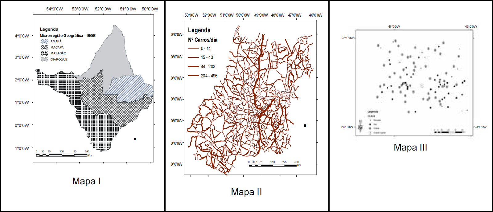

Os mapas temáticos podem ser construídos levando-se em conta vários métodos; cada um deles apropriado às características e à forma de manifestação (em pontos, em linhas, em áreas) dos fenômenos considerados em cada tema, seja a abordagem qualitativa, ordenada ou quantitativa. Pode-se empreender também uma apreciação sob o ponto de vista estático ou dinâmico. Assim, é possível agrupar esses métodos em quatro categorias fundamentais de representação: qualitativa, ordenada, quantitativa e dinâmica.
M. Martinelli. Mapas da geografia e a cartografia temática. São Paulo: Contexto, 2003, p. 33 (com adaptações).
De acordo com os métodos de representação e a forma de manifestação dos fenômenos geográficos, os mapas I, II e III, acima apresentados, são classificados, respectivamente, em